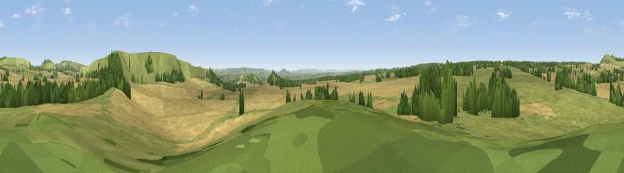

Viewpoint near Stourton
#21240 in England · top 38% of its area beats it · near StourtonWhere it is
The exact computed spot (ST 79125 34725). Click the marker for map links.
The view, rendered

A 360° render of this exact spot computed from the terrain model, tree cover and land cover — summer colours, afternoon light, calibrated against photographs of famous viewpoints. Real trees, hedges and buildings will differ in detail.
The panorama
Grey silhouette: terrain skyline in each direction (720 bearings, Earth curvature and refraction included). Dashed green: skyline with trees (+15 m) and buildings (+8 m) as obstacles. Blue strip: how far the ground is visible on each bearing.
Where the view opens
Wedge length = distance to the farthest visible ground on that bearing (vegetation-aware). Rings at 10, 25 and 50 km.
What fills the view
51% grassland · 40% cropland · 9% woodland
Angular shares of the visible panorama (visual magnitude), not map area. Landscape diversity 0.41 (0–1 Shannon).
Key numbers
More beautiful places nearby
The staircase of upgrades: each row has a higher view potential than everything closer. Driving times are estimates from straight-line distance, calibrated against real road routing — check an actual route before setting out.
| Place | Direction | Drive | Score |
|---|---|---|---|
| Viewpoint near Mere | E · 1 km | ~4 min | 61.5 |
| White Sheet Hill | E · 1 km | ~4 min | 64.9 |
| Long Knoll | N · 3 km | ~7 min | 74.6 |
| Cley Hill | NNE · 11 km | ~21 min | 76.8 |
| Viewpoint near Lamyatt | W · 12 km | ~23 min | 77.8 |
| Viewpoint near Berwick St John | SE · 19 km | ~33 min | 78.2 |
| Beacon Batch | NW · 38 km | ~57 min | 79.4 |
| Viewpoint near Askerswell | SSW · 47 km | ~68 min | 81.7 |
51.11143, -2.29958 · source: screening · position refined by local search. Computed location — check access rights before visiting.